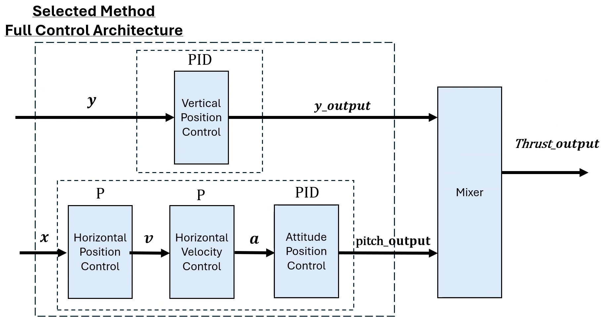

During my undergraduate studies, I lead a team of four undergraduate electronic engineers, to develop the design specifications and wiring diagrams that supported the fabrication of an autonomous robot system. The robot was implemented with a PID controller for differential drive, whilst using the on board sensors designed by the group, to follow a white line in an unpredictable environment.
Such as the path show in the image above, provided by the University of Manchester.
For undergradate dissertation, I created a unique method of implementing impedance control, into the new CoppeliaSim simulation that integrated the MujoCo soft bodies physics engine. This allowed me to emulate one degree of freedom robotic arm with an antagonisitic cable actauted joint. The goal of the project was to push the limits of this new software whilst developing an impedance control system.
The robot arm was simualted to statically hold a neutral position of 45 degrees, and would return to this position after any force injection that would cause an oscillatory response.
To compare the accuracy of the simulation, a physical prototype of the envisioned model was built that implemented a differential position controller.
The whole model was 3D printed and actuated with fishing wire. The reason that the physical prototype used differential control was due to the lack of back drive in the servo motors purchased within budget. More on this report can be read here.
During my masters degree, I created a simple A* Star path planning algorithm in python. The goal was to create a simple path planner to devlop skills that could be transferable to a platform robot such as a Leo Rover and The Jackel UGV.
In my masters degree, I coded a GUI to simulate the flight operation of a drone in a 2D frame.
The drone implemented a control architecture to fly to specific vehicle states based off given coordinates. This was done by mixing two controllers a vertical PID controller and a horizontal cascade controller as shown below.
A cascade controller was used to increase the efficiency of the attitude control of the drone. As it gave a faster control of the primary variable, and decreased deadtime in the system.
A full video can be seen on my Youtube channel.
Studying at the University of Manchester. I lead a team of postgraduate engineers to assemble a Leo Rover and a Trossen PincherX 150 Manipulator that will support each other with ROS2 code to find and retrieve an object with a high degree of autonomy.
With this project there was four main sections that our team needed to complete.
With this project there was four main sections that our team needed to complete.
With this project there was four main sections that our team needed to complete.
With this project there was four main sections that our team needed to complete.
With this project there was four main sections that our team needed to complete.
The full report can be found here. As well as the video for the design requirements for the project.